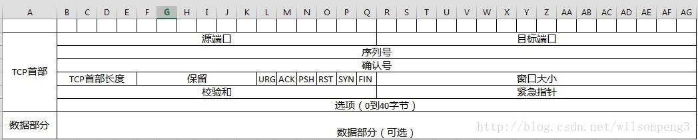
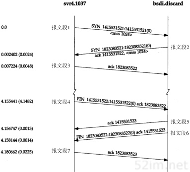
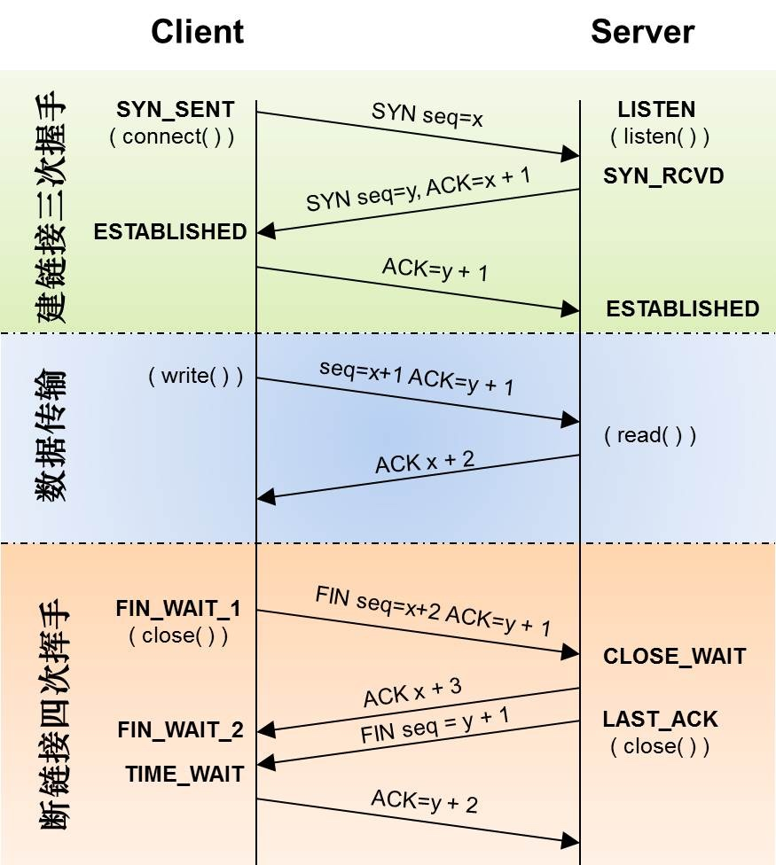
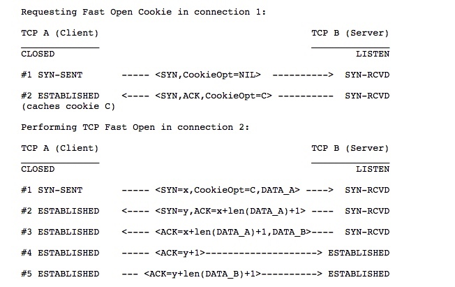
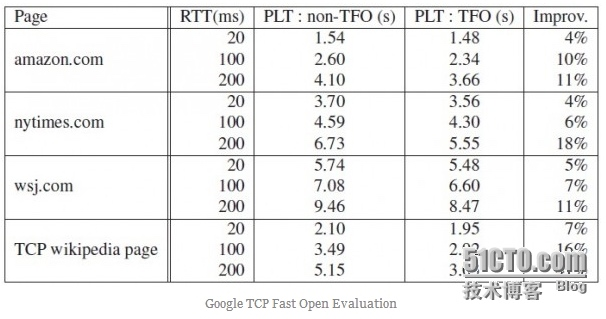
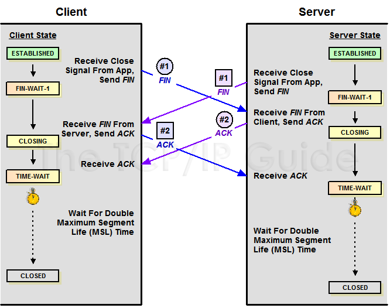
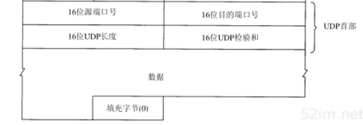

TCP与UDP
TCP
TCP提供一种面向连接的、可靠的字节流服务。
面向连接意味着TCP在彼此交换数据之前必须先建立一个TCP连接，通讯结束之后要断开连接。
可靠性是通过下列方式来提供的：
- 应用数据被TCP分割成最适合传输的数据块（报文段segment）
- TCP发送一个段后，启动一个定时器，等待目标端确认收到这个报文段，如果不能及时收到一个确认，将重发这个报文段
- 当TCP收到发自另一端的数据，将发送一个确认。这个确认不是立即发送，通常会延迟几分之一秒
- TCP将保持它首部和数据的校验和。如果收到段的校验和有差错，TCP将丢弃这个报文段（希望发送端超时并重发）
- 由于IP数据报到达可能会时序，TCP将对收到的数据进行重新排序，将收到的数据以正确的顺序交给应用层
- IP数据报可能发送重复，TCP接收端会丢弃重复的数据
- TCP提供了流量控制。TCP连接的每一方都有固定大小的缓冲空间，接收端只允许另一端发送接收端缓冲区能够接纳的数据。这将防止较快的主机导致较慢的主机缓冲区溢出。
TCP首部

- 源端口、目标端口：16位表示，用于传输层多路复用
- 序列号：表示本报文段所发送数据的第一个字节的编号，在TCP连接中所发送的字节流的每一个字节都会按顺序编号。32位表示，每232个字节，就会出现序列号回绕，再次从0开始。(TODO 如何区分两个相同序列号的不同TCP报文段)
- 确认号：表示接收方期望收到发送方下一个报文段的第一个字节数据编号。
- TCP首部长度：由于TCP首部包含一个可变长度的选项部分，因此需要这样一个值表示这个TCP首部到底有多长，32位。
- URG：表示本报文段中是否包含紧急数据，URG=1时后面的紧急指针字段才有效。
- ACK：表示前面的确认号字段是否有效。TCP规定，连接建立后，ACK必须为1。
- PSH：表示接收端是否应该立即将数据推送给上层。
- RST：表示连接出现严重错误，必须释放连接，然后重新建立连接。或者说明上次发送的数据有问题，接收端拒绝响应。
- SYN：表示是否是请求建立连接或者同意建立连接的报文。在建立连接时使用，用来同步序号。当SYN=1，ACK=0时，表示这是一个请求建立连接的报文段；当SYN=1，ACK=1时，表示对方同意建立连接。
- FIN：表示数据是否发送完毕。FIN=1，相当于告诉对方，数据已经发送完毕，可以释放连接。
- 窗口大小：告诉对方，从本报文段的确认号开始允许对方发送的数据量。
- 校验和：
- 紧急指针：标记紧急数据在数据段中的位置
- 选项部分：选项部分的最大长度为40个字节
选项部分的应用
- MSS：最大报文段长度指数据字段的最大长度(不包含TCP首部长度)。MSS指发送端期望对端发送TCP报文段时数据字段的长度，如未填写，默认采用536字节。MSS只出现在SYN报文中。
- 窗口扩大选项：TCP首部的窗口大小长度是16位，最大值是65535。随着时延和带宽较大的通讯产生，需要更大的窗口来满足性能和吞吐率，所以产生了这个窗口扩大选项
- SACK选择确认项：
- 时间戳选项：可以用来计算RTT，也可以防止回绕序号。
- NOP(NO-Operation)：选项中要求每种选项长度都必须是4字节的倍数，不足的则用NOP填充。也可以用来分割不同的选项字段。
三次握手


- SYN 客户端随机选择一个序列号x，并发送一个SYN分组，其中可能还包括了其他TCP标志和选项，比如图中的mss=1024的选项。
- SYN ACK 服务端给x+1设置为确认号，并选择自己的一个随机序列号y，追加自己的标志和选项
- ACK 客户端给y+1作为握手期间的最后一个ack分组。之后就可以发送数据，服务端需要等待收到ack分组之后才能发送数据。 为什么需要3次握手，主要是要初始化Sequence Number的初始值。通讯双方要互相通知对方自己初始化的Sequence Number，所以叫SYN(Synchronize Sequence Numbers)。 每次新建一个TCP连接都需要经历三次握手过程，带来的延迟使得新建连接要付出很大的成本。
TCP Fast Open
TFO是在原始TCP基础上进行扩展的协议，它基于TCP的改良之处是在三次握手期间可以进行应用数据的传输。Linux内核从3.7版本开始支持，3.13以后默认启动。

运行原理
第一次连接
1. 客户端发送SYN包，包尾加一个FOC请求，只有4个字节
2. 服务器端收到FOC请求，验证后会根据来源IP地址生成cookie(8个字节)，将这个Cookie加载到SYN + ACK包的末尾发送回去
3. 客户端缓存获取到的Cookie，给下次连接使用
第二次连接
1. 客户端发送SYN包，后面带上缓存的cookie，然后就是正式发送的数据
2. 服务器端验证Cookie正确，将数据交给上层应用处理得到相应的结果，然后在发送SYN+ACK时，不再等待客户端的ACK确认，即开始发送相应的数据。

Cookie
TFO的Cookie是用来快速打开的关键，所以有一些限制是需要遵守的：
1. Cookie的长度必须是偶数，且长度是0或者介于4~16
第一阶段CookieOpt=Nil的SYN包，这个时候还没有Cookie所以长度是0
2. TFO Server生成Cookie需要快速，生成的Cookie有时效性
- 简单的实现就是直接将客户端地址+Key进行AES-128加密，然后截断为64位传给客户端，下次直接对客户端的IP进行同样的操作，然后对比结果
- 时效性的话，可以定期更换Server端的Key，这样以前的Cookie都失效
3. TFO Client Cookie处理
- TFO客户端应该将Cookie保存下来，如果是多实例的客户端，需要针对每个客户端都应该保存一份
- TFO客户端尽量将MSS也保存下来，这样下次使用的时候第一次就可以知道传多少数据合适，不需要等ACK传回MSS才能知道
收益

除了页面加载变快改善了用户体验之外，TFO给服务器也带来了一些好处。由于每个请求都节省了一个RRT，相应地也减少了服务器端Cpu消耗。
四次挥手

首先进行关闭的一方发送第一个FIN执行主动关闭，此时应用程序不能
为什么需要4次挥手，因为TCP是全双工的，所以发送方和接收方都要FIN和ACK，只不过有一方是主动的，所以看上去就成了所谓的4次挥手。
IP分片
IP层接收到一份需要发送的IP数据报时，它要判断向本地哪个接口发送数据，并查询该接口获得其MTU。IP把MTU与数据报长度进行比较，如果需要则进行分片。分片可以发生在原始发送端主机上，也可能发生在中间路由器上。
把一份IP数据报分片以后，只有到达目的地才进行重新组装。重新组装由目的端的IP层来完成，其目的是使分片和重新组装过程对传输层(TCP和UDP)是透明的，除了某些可能的越级操作外。已经分片过的数据报有可能会再次进行分片(可能不止一次)。IP首部中包含的数据为分片和重新组装提供了足够的信息。选择路由时每个分组(一个分片都成为一个分组)可以与其他分组独立。
IP层本身没有超时重传的机制--由更高层来负责超时和重传。当来自TCP报文段的某一片丢失后，TCP在超时后会重发整个TCP报文段。没有办法只重传数据报中的一个数据报片。事实上，如果对数据报分片的是中间路由器，而不是起始端，那么起始端系统就无法知道数据报时如何分片的。因此一般要避免在IP层分片。任何运输层首部只出现在第1片数据中。
MTU
最大传输单元(Maximum Transmission Unit)是指一种通讯协议的某一层面上所能通过的最大数据包大小(单位为字节)。IP协议中，一条IP传输路径的“路径最大传输单元”被定义为从源地址到目标地址所经过“路径”上的所有IP跳的最大传输单元的最小值。
路径最大传输单元发现方法
这是一种确定两个IP主机之间路径最大传输单元的技术。在这项技术中，源地址将设置数据报的DF(Don't Fragment，不要分片)标记位，再逐渐增大发送的数据报的大小--路径上任何需要将分组进行分片的设备都会将这种数据报丢弃并返回一个“数据报过大”的ICMP响应到源地址--这样，源主机就“获取”到了不用进行分片就能通过这条路径的最大传输单元。
不幸的是，越来越多的网络封杀了 ICMP 的传输（譬如说为了防范 DoS 攻击）——这使得路径最大传输单元发现方法不能正常工作，其常见表现就是一个连接在低数据流量的情况下可以正常工作，但一旦有大量数据同时发送，就会立即挂起（例如在使用 IRC 的时候，客户会发现在发送了一个禁止 IP 欺骗的 ping 之后就得不到任何响应了，这是因为该连接被大量的欢迎消息堵塞了）。而且，在一个使用因特网协议的网络中，从源地址到目的地址的“路径”常常会为了响应各种各样的事件（负载均衡、拥塞、断电等等）而被动态地修改——这可能导致路径最大传输单元在传输过程中发生改变——有时甚至是反复的改变。其结果是，在主机寻找新的可以安全工作的最大传输单元的同时，更多的分组被丢失掉了。
对于时下大多数使用以太网的局域网来说，最大传输单元的值是 1,500 字节。但是像 PPPoE 这样的系统会减小这个数值，通常是1492（= 1500 - 2（PPP）- 6（PPPoE））。
MSS
最大分段大小，是TCP数据包每次能够传输的最大数据分段，TCP默认的MSS值为536。为了达到最佳的传输效能TCP协议在建立连接的时候通常需要协商双方的MSS值，这个值TCP协议在实现的时候往往用MTU值代替(需要减去IP数据包头的20Byte和TCP数据段的包头20Byte)所以往往MSS为1460.通讯双方会根据双方提供的MSS值的最小值确定为这次连接的MSS值。
MSS协商过程：
TCP Client发出SYN报文，其中option选项填充的MSS字段一般为(MTU - IP头size - TCP头size)，同样TCP Server收到SYN报文后，会发送SYN + ACK报文应答，option选项填充的mss字段也为(MTU - IP头size - TCP头size)；协商双方会比较SYN和SYN+ACK报文中mss字段的大小，选择较小的mss作为TCP分片的大小。
UDP(User Datagram Protocol)
UDP头

UDP仅仅是在IP层之上通过嵌入了应用程序的源端口和目标端口，提供了一个“应用程序多路复用”机制。
因此可以决定了UDP的特点：
- 不保证消息交付。不确认，不重传，无超时。
- 不保证交付顺序。没有包序号，不重排，不会发生队首阻塞。
- 不跟踪连接状态。不必建立连接或重启状态机。
- 不需要拥塞控制。不内置客户端或网络反馈机制。
UDP数据报必须封装在IP分组中，应用程序必须读取完整的信息，因此数据报不能分片。
NAT
网络地址转换，也叫网络掩蔽或IP掩蔽，是一种在IP数据报通过路由器或防火墙时重写来源IP地址或目标IP地址的技术。这种技术被普遍使用在有多台主机但只通过一个公有IP地址访问因特网的私有网络中。根据规范，路由器是不能这样工作的，但是它的确是一个方便且得到了广泛应用的技术。
nginx的udp负载均衡
nginx的负载均衡使用的反向代理模式
TCP协议的困境
从上个世纪90年代互联网兴起一直到现在，大部分的互联网流量传输只使用了网络协议。使用IPV4进行路由，使用TCP进行连接层面的流量控制，使用SSL/TLS协议实现传输安全，使用DNS进行域名解析，使用HTTP进行应用层的传输。
近三十年来，这几个协议都发展缓慢。TCP主要是拥塞控制算法的改进，SSL/TLS之前几个小版本的改动主要是密码套件的升级。TLS1.3有飞跃式的发展但是目前为止还未正式发布，IPV4到IPV6有了巨大的进步，DNS增加了一个安全的DNSSEC，然而和IPV6一样部署进度缓慢。
传统协议面临几个问题：
1. 协议历史悠久导致中间设备僵化
2. 依赖操作系统的实现导致协议本身僵化
3. 建立连接的握手延迟大
4. 队首阻塞
中间设备的僵化
TCP协议本来是支持端口、选项及特性的增加和修改。但是由于TCP协议用的太久了，很多中间设备，包括防火墙、NAT网关、整流器等出现了一些约定俗成的动作。比如有些防火墙只允许通过80和443，不开放其他端口。NAT网关在网络地址转换时重写传输层头部，有可能导致双方无法使用新的传输格式。整流器和中间代理有时候出于安全的需要，会删除一些它们不认识的选项字段，从而导致特性修改失败。
依赖于操作系统的实现导致协议僵化
TCP是由操作系统在内核协议栈层面实现的，一般情况下应用程序只能使用，不能直接修改。无论是服务器端还是PC端操作系统的升级都非常麻烦、滞后。导致TCP特性更新，很难快速推广。比如TFO(TCP Fast Open)，虽然2013年就被提出了，但是Windows很多版本不支持(该特性需要客户端和服务端同时支持)。
建立连接的握手延迟大
- TCP需要三次握手才能建立连接
- TLS完全握手需要至少2个RTT才能建立，简化握手需要1个RTT
队首阻塞
TCP使用序列号来标识数据包的顺序，必须按照顺序处理，如果前面的数据报丢失，后面的数据就无法交给应用进程处理，需要阻塞等待数据重传。
HTTP 1.1 通过pipelining管道技术实现一次性发送多个请求，以期提高吞吐和性能。但是要求必须按照发送请求的顺序返回，如果第一个请求被堵塞了，则后面的请求即使处理完毕也需要等待。
HTTP/2 使用了数据分帧的办法，多个请求复用一个TCP连接，将每个请求响应都分拆为若干个frame发送，这样即使一个请求被阻塞了，也不会影响其他请求。但是HTTP 2 over TCP无法解决传输层的队首阻塞问题。
TLS协议的队首阻塞
Record是TLS协议处理的最小单位，最大不能超过16K，一些服务器比如Nginx默认的大小就是16K。由于一个Record必须经过数据一致性校验才能进行加解密，所以record中一部分丢失会导致整个Record无法处理。
QUIC(Quick Udp Internet Connection)快速UDP互联网连接
Quic相对于现在的http2+tls+tcp协议有如下的优势：
1. 减少了TCP三次握手及TLS握手时间
2. 改进的拥塞控制
3. 避免队首阻塞的多路复用
4. 连接迁移
5. 前向冗余纠错